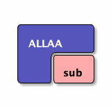

Basic Materials of C++
Table of Contents
1 程式的編寫與執行
1.1 source code
所謂的程式碼基本上都只是一些文字檔，只是這些文字的撰寫是依照不同語言(如 C、C++、Python、R…)所規定的語法(syntax)來撰寫。
1.2 編寫
既然程式碼只是文字檔，所以，其實我們可以很單純的以 windows 的記事本或是 MacOS 中的 TextEdit 來編寫各種語言的程式碼，只是，使用這些應用程式來編寫程式會相對辛苦，因為相對於一些專用的應用程式如 DevC++、VSCode、PyCharm 等都會提供撰寫者許多的額外功能，例如即時除錯、編譯、執行、除錯..。
1.3 編譯與執行
既然寫完的程式碼只是文字檔，那這些文字檔要如何變成可以執行的執行檔呢？如下圖1所示：
Figure 1: Compile and Execution
程式碼必須先經過 Preprocess、Compile、Assemble、Link 等步驟才能成為一支可以執行的執行檔(如 Windows 下的.exe 或是 MacOS 下的.app)。
2 C++基本架構
1: #include <iostream> 2: using namespace std; 3: 4: int main() 5: { 6: cout << "Hello world\n"; 7: return 0; 8: }
Hello world
2.1 main()
C/C++的程式由許多的 function(函式)組成，function 的基本架構如下：
1: 傳回值類型 函式名稱() { 2: 函式內容 3: retrun 傳回值 4: }
上述程式中的第4行開始即為一名為 main 的 function，這也是 C/C++程式最主要的一支 function，程式被執行時，就由整支程式中找出名為 main 的 function 開始執行。之後我們的程式也將依序寫在這組大括號中。
2.2 標頭檔(Headers)
上述程式中，第1行為標頭檔(Header)的引入，這裡告訴 Compiler 說我需要用到 iostream 這個 header，原因是程式的第6行用到 cout 這個指令，而這個指令就被定義在 iostream 這個 header 中，其中的 io 即代表 input/output。
往後如果用到其他函數，也需要 include 相關的 header，例如，如果需要用到數學的開根號函式 sqrt()，就需要 include math.h 這個 header，如下例中的第1行。
1: #include <iostream> 2: #include <math.h> 3: using namespace std; 4: 5: int main() 6: { 7: cout << sqrt(100) << endl; 8: return 0; 9: } 10:
10
2.3 命名空間(namespace)
一支程式往往會用到許多的指令、函式、變數，不同單位所開發的程式也許會用到相同的名稱來為這些函式或變數命名，如此一來就可能導致名稱的衝突。舉個例子，在一年級新生中，有三個班級裡都有個叫*陳宜君*的同學，那麼我們怎麼區分這三位同學呢？一個方式在提及這些同學時在前面加上班級，如：一年三班的陳宜君。
C++就提出這種方式來解決名稱可能衝突的問題，以下面程式為例：
1: #include <iostream> 2: int main() { 3: std::cout << "每次用到cout都指定namespace"; 4: return 0; 5: }
每次用到cout都指定namespace
上例的第3中的 std::就是 C++的標準命名空間，用來說明這裡所用的 cout 是 C++預設的指令，但是如果你並沒有命名衝突的問題，其實可以一開始就直接把 namespace 設定為 std，如下面程式中的第2行。
1: #include <iostream> 2: using namespace std; 3: int main() { 4: cout << "用到cout時不用再特別指定namespace"; 5: return 0; 6: }
用到cout時不用再特別指定namespace
有關於 namespace 的詳細說明，可參考簡介名稱空間這篇文章。
3 輸出
顧名思意，輸出是將資料輸出到某種設備（如螢幕、印表機…）, 常見的輸出指令有 cout、printf()、puts()、putchar()等。
3.1 cout
cout 為 iostream 這個類別(class)的 object2，所以程式中若使用到 cout 就必須 include iostream。cout 可以將文字資料與變數資料列印在螢幕上，在語法上會使用<<作為文字與變數之間的連接工具，若要換行則使用“\n”或是關鍵字 endl3。
1: #include <iostream> 2: using namespace std; 3: int main() { 4: cout << "Hello world\n"; 5: cout << "半徑：" << 3 << endl; 6: cout << "圓面積：" << 3*3*3.1416 << "\n"; 7: return 0; 8: }
Hello world 半徑：3 圓面積：28.2744
3.2 printf()
printf()為定義在 stdio.h 中的一個 function，所以若用到 printf()就要 include stdio.h。和 cout 一樣，printf()一樣是用來進行資料的輸出，只是在輸出時提供了更多的格式選定選項。基本的應用如下例，更複雜的應用則在介紹完變數(vairalbe)概念後再行說明。
1: 2: #include <stdio.h> 3: using namespace std; 4: int main() { 5: printf("Hello world\n"); 6: printf("半徑：%d\n", 3); 7: printf("圓面積：%.2f\n", 3*3*3.1416); 8: return 0; 9: }
Hello world 半徑：3 圓面積：28.27
3.3 跳脫字元
4 Variable
1: #include <iostream> 2: using namespace std; 3: int main() { 4: int x; 5: x = 32; 6: cout << "This is demostration of variable declaration of C++.\n"; 7: cout << "變數x的內容為: " << x << endl; 8: }
This is demostration of variable declaration of C++. 變數x的內容為: 32
5 if-else
5.1 單一條件
1: #include <iostream> 2: using namespace std; 3: int main() { 4: int x; 5: x=31; 6: if (x%2==0) { 7: cout << "x為偶數\n"; 8: } 9: if (x%2!=0) { 10: cout << "x為奇數\n"; 11: } 12: }
x為奇數
5.2 雙重條件
5.3
#include <stdio.h> int main() { int x=4; if (x%2==0) { printf("even\n"); } else { printf("odd\n"); } }
6 for
7 nested for
8 while
9 function
9.1 function declaration
9.2 function define
9.3 compute n!
#include <iostream> using namespace std; int n(int x) { if (x==1) { return 1; } else { return x*n(x-1); } } int main() { int hi = 9; cout << n(8) << endl; }
10 ditaa
